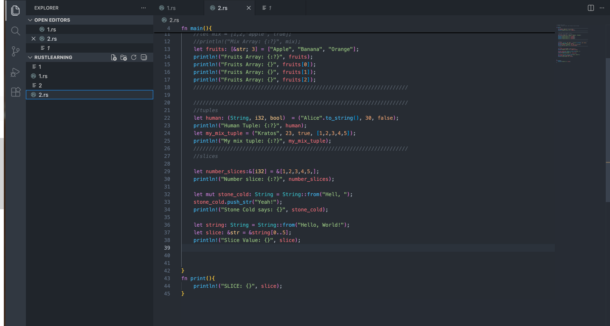
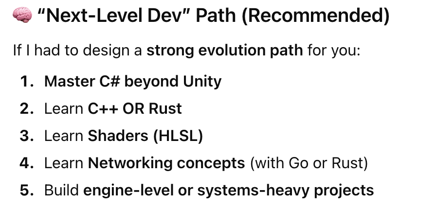
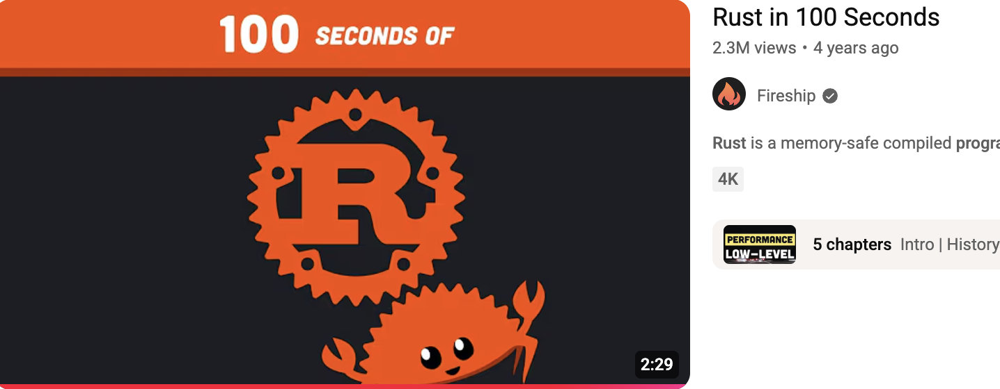

I am learning Rust!
January 3, 2026 - Helsinki, Finland

Learning a new language
I have thought about learning a new language for a while now. I have done Unity for 4 years now, and that´s nice but i needed something new.
I have tried doing Python aps whit Pygame, but coming from Unitys UI it is such a boring task (:
Then i thought about the languagues i alredy knew: C, C++, C#, Python, Micropython... and i immediatly realised something big:
ChatGPT can help!
At the time i didn't ask what language to learn, since i just wanted a coding project idea. Whit the ideas it got me, the most intresting one being a weather app, that was the time i thought to learn a new language.
I asked for new ones and Rust popped out for me. I had heard about in a finish magazine and also on the internet of course.

Starting the proccess
Then i went to Youtube and watched a great video from Fireship. It helped a lot in understing it. I will link it and everything at the bottom of the post.

While i am not so interested in making low level programs yet, i thought it would be fun to learn a new language (haven't done that really since 2024 i guess 😮) and a GREAT way to start 2026!
All that was left was a great course. I have always been a fan of long 3 - 5 hour courses on Youtube since they are free and teach you all the basics. I like learning by doing and that´s my plan after the course.
The course i went whit was about the first that comes on Youtube after searching "Rust course" 😅 It is from BekBrace on Youtube and really nice!

I have been learning Rust for 2 days now so i can´t say anything reasonable now. I can only say that i am exited to learn it for the next ≈30 days!
Links:
Fireships video
The course i have been following
Rust site
Install Rust
Nice article (i read just a bit)
The Rust book for helping you